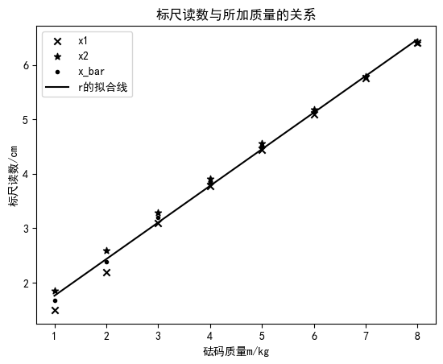

19 固体杨氏模量 计算器

初始化部分（不用阅读 直接跳过）
1 | import pandas as pd |
输入部分 并进行基础处理
请将你的数据放在同目录下的’data.txt’文件中，格式如下：
第一行有三个数，分别为金属丝的长度，平面镜和直尺之间的距离和光杠杆的臂长
第二行有一个整数，表示测量直径时测量的次数
第三行有个数，表示测量的直径
第四行有一个整数，表示测量拉力时测量的次数
第五行和第六行有个数，表示重量增加时的读数
1 | 80.65 152.22 7.49 |
输出部分 输入的内容将被读取并显示在屏幕上，并进行基础处理。
1 | f=open('data.txt', 'r') |
L = 80.650 cm
l = 7.490 cm
D = 152.220 cm
d= ['0.603', '0.601', '0.597', '0.601', '0.603', '0.606'] mm
d_bar= 0.602 mm
x_1= ['1.50', '2.19', '3.10', '3.78', '4.45', '5.09', '5.76', '6.41'] mm
x_2= ['1.85', '2.59', '3.29', '3.91', '4.56', '5.19', '5.79', '6.41'] mm
x= ['1.68', '2.39', '3.20', '3.84', '4.50', '5.14', '5.78', '6.41'] mm
Markdown格式输出：
|$id$|$1$|$2$|$3$|$4$|$5$|$6$|
|:---:|:---:|:---:|:---:|:---:|:---:|:---:|
|$d$|$0.603$|$0.601$|$0.597$|$0.601$|$0.603$|$0.606$|
|$id$|$1$|$2$|$3$|$4$|$5$|$6$|$7$|$8$|
|:---:|:---:|:---:|:---:|:---:|:---:|:---:|:---:|:---:|
|$x_1$|$1.50$|$2.19$|$3.10$|$3.78$|$4.45$|$5.09$|$5.76$|$6.41$|
|$x_2$|$1.85$|$2.59$|$3.29$|$3.91$|$4.56$|$5.19$|$5.79$|$6.41$|
|$\bar x$|$1.68$|$2.39$|$3.20$|$3.84$|$4.50$|$5.14$|$5.78$|$6.41$|
逐差法
相关公式
需要的常数：
1 | (Markdown) |
1 | deltam=5e-3 |
普通格式输出：
b= 6.7031 mm
k= 0.0096
E= 1.6828e+11 N/m^2
deltaE= 1.6152e+09 N/m^2
Markdown格式输出：
E=\frac{8mgLD}{\pi \Delta b d^2 l}=\frac{8\times1.00\times9.7887\times8.07\times10^{-1}\times1.52}{\pi \times 6.70\times10^{-3} \times (6.02\times10^{-4})^2 \times 7.49\times10^{-2}}=1.68\times10^{11} N/m^2
deltaE= 1.62\times10^{9}
作图法 （实验应该不作要求）
1 | beta,apha= np.polyfit(range(1,len(x)+1),[i*100 for i in x], 1) |
1.0866 0.6734

普通格式输出：
b= 6.7339 mm
k= 0.0096
E= 1.6751e+11 N/m^2
deltaE= 1.6034e+09 N/m^2
Markdown格式输出：
E= 1.68\times10^{11}
deltaE= 1.60\times10^{9}